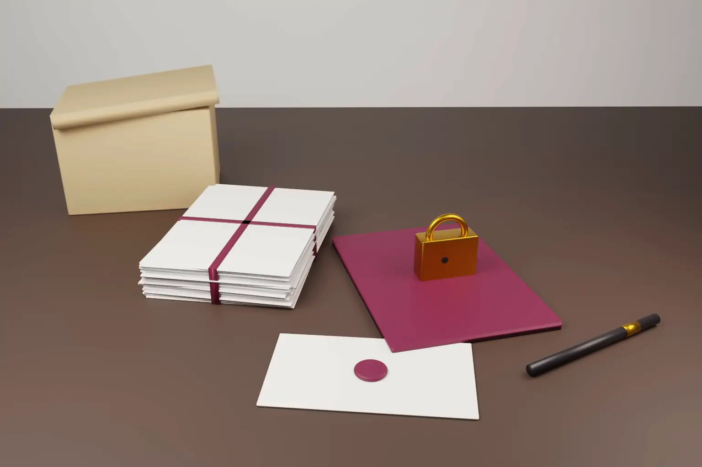

Can a party to a Unified Patent Court case use section 1782 to get documents in the US that the UPC refused to order? On 29 October 2026 the Fifth Circuit said not at this stage. It reversed a Texas order that had required a patent owner to hand over its patent purchase agreement for use in European FRAND litigation.
The case is Motorola Mobility, L.L.C. v Advanced Standard Communication, L.L.C., No. 26-10747. The panel was Judges Jones, Southwick and Duncan. Judge Edith Hollan Jones wrote the opinion, which is published. It weighs a UPC refusal to order disclosure against a section 1782 application.
- The Fifth Circuit reversed a section 1782 order for the unredacted patent purchase agreement between ASC and ZTE.
- A magistrate judge's section 1782 order is treated as dispositive. The district court must review it afresh if objections are raised.
- The respondent does not have to give "authoritative proof" that the foreign court would reject the evidence.
- The UPC had refused the same document a few weeks earlier. That made the US request premature. The court also found it was an open attempt to get around the UPC ruling.
- The court left the door open. If circumstances change, Motorola may apply again.
The facts
On 31 December 2022, Advanced Standard Communication (ASC) bought a bundle of telecommunications patents from ZTE Corporation. ASC says some of them cover technology used in Motorola's 5G devices. Licence talks failed. In autumn 2025 ASC sued Motorola on three patents. One suit was filed in the UPC and two in Munich District Court I.
Motorola denied infringement. In the alternative, it argued that the patents must be licensed on fair, reasonable and non discriminatory (FRAND) terms and that ASC's demands were not FRAND. To test that, Motorola wanted the terms of the ZTE purchase agreement. The public version referred to licences disclosed in an exhibit that was not attached.
In December 2025 Motorola applied to the Northern District of Texas, where ASC has its headquarters, for a subpoena under 28 U.S.C. § 1782. In January 2026 it also asked the UPC for the same document. In April 2026 the UPC refused. It found that Motorola had not substantiated the facts the document was meant to prove. It also doubted that a purchase price could show a reasonable licence rate. The UPC said its order did not prevent a production order at a later stage.
In May 2026 the magistrate judge ordered production anyway. The order did not mention the UPC ruling. The district court reviewed it only for clear error and affirmed. ASC appealed.
What section 1782 allows
Section 1782 lets a US federal court order a person who resides or is found in its district to give evidence for use in a foreign or international tribunal. Any interested person may apply. Motorola met those statutory conditions easily, and the court said so.
The harder question is discretion. In Intel Corp. v Advanced Micro Devices, Inc., 542 U.S. 241 (2004), the Supreme Court gave four factors. First, whether the respondent is a party to the foreign case. Second, the nature of the foreign tribunal and its receptivity to US help. Third, whether the request tries to circumvent foreign rules on gathering proof. Fourth, whether the request is unduly intrusive or burdensome.
What the Fifth Circuit decided
Standard of review. The court held that a section 1782 application is a stand alone case. A magistrate judge's order on it is the functional equivalent of a dispositive ruling. So the district judge must review it de novo under Rule 72(b) when a party objects. The court noted that district courts in the circuit had taken different views on this.
Factor one. ASC was a party to the UPC case. The UPC could order it to produce documents without US help. This factor weighed against Motorola. Both sides' German lawyers also agreed that the Munich court applies a similar scope of disclosure.
Factor two. This was the main error. The lower courts had required ASC to give "authoritative proof" that the European courts would not accept the evidence. The Fifth Circuit held that its earlier case law required that only for foreign privilege. For receptivity, the court must weigh all the evidence about the foreign proceedings. Here the UPC had looked at Motorola's need and found none, at least not yet. The court relied on Kestrel Coal v Joy Global (7th Cir. 2004). The sensible step is a renewed request to the foreign court if the documents become important later. The factor weighed against discovery because the request was premature.
Factor three. The court said Motorola was not hiding its aim. It was openly seeking an end run around the UPC ruling. It cited SPS Corp I v General Motors (3d Cir. 2024) on adverse foreign rulings and finality. It also noted that Motorola applied in Texas while its UPC request was still pending.
Factor four. Producing one agreement was not burdensome. ASC said disclosure might be intrusive and prejudicial. The court said any protective order discussion was premature.
Weighing the factors again without these errors, the court found the balance favoured ASC "at this time". It reversed. Section 1782 has no foreign discoverability requirement, but comity still matters.
What the court did not decide
- It did not decide whether patent purchase agreements are relevant to FRAND rates. The UPC had doubted their relevance.
- It did not set precise burdens of proof for the Intel factors.
- It did not bar a fresh application if the UPC or the German courts later find the document necessary.
- It did not require applicants to try the foreign court first. There is still no exhaustion rule.
Why it matters for SEP disputes
Section 1782 applications are now common in standard essential patent disputes. Where a licensor or patent owner is based in the US, its licences and purchase agreements are often the evidence implementers want for FRAND arguments in Europe. This ruling makes timing important. A party that asks the UPC first and loses may find a US court unwilling to help soon after.
The reasoning applies to Texas, Louisiana and Mississippi, the states within the Fifth Circuit. Other circuits remain free to weigh the factors differently. The Third Circuit in SPS Corp I reached a similar result on adverse foreign rulings.
How Europe and India handle the same evidence
UPC. Article 59 of the UPC Agreement lets the court order the opposing party or a third party to produce evidence in its control. The requesting party must first present reasonably available and plausible evidence. Rule 190 of the Rules of Procedure sets out how to apply. The court can protect confidential information. As this case shows, the UPC asks whether the evidence is necessary, relevant and proportionate at each stage.
Germany. German procedure has no general discovery. Under section 142 of the Code of Civil Procedure, a court may order a party or third party to produce a document a party has referred to. Both experts in this case agreed that the German courts were unlikely to go further than the UPC.
United Kingdom. English courts often order production of comparable licences in FRAND trials. They usually protect them through confidentiality club arrangements. A foreign court can also seek evidence in England through a letter of request under the Evidence (Proceedings in Other Jurisdictions) Act 1975.
India. In commercial suits, Order XI of the Code of Civil Procedure, as amended by the Commercial Courts Act, 2015, requires parties to disclose documents in their power and allows discovery and inspection. Indian courts often receive comparable licences in sealed cover. In Koninklijke Philips N.V. v Nothing Technology Ltd, CS(COMM) 1138/2026, the Delhi High Court on 16 October 2026 directed licence material to be filed in sealed cover. Our note on SEP evidence and claim mapping in India covers how Indian courts test this material. Indian courts are also foreign tribunals for section 1782 purposes. A party to an Indian patent suit may therefore apply in the US where the respondent is found there.
Practical steps
- Plan the order of requests. If you need US held evidence for a UPC case, decide early whether to apply in the US before asking the UPC. A recent UPC refusal can weigh against US discovery in the Fifth Circuit.
- Build the record on receptivity. File expert evidence on what the UPC or the national court will accept, and at what stage.
- Expect de novo review. In the Fifth Circuit, objections to a magistrate judge's section 1782 order get fresh review. Prepare the objections as a full argument.
- Patent owners. Keep purchase agreements and licence exhibits organised and ready for confidentiality protection. Expect implementers to seek them in several forums.
- Indian applicants and licensees. Where the counterparty sits in the US, section 1782 may help in Indian proceedings too. Check what the Indian court has already ruled before applying.
We advise on SEP portfolios and cross border patent disputes in India, the US and Europe. See our international patent support page. Our notes on the UPC PMAC FRAND guidelines and the UK SEP consultation response cover related FRAND developments.
Frequently asked questions
What is section 1782 discovery?
It is a US federal statute, 28 U.S.C. § 1782. It lets a US district court order a person in its district to give testimony or documents for use in a foreign or international tribunal. The court has discretion and applies the four Intel factors.
Can section 1782 be used for Unified Patent Court proceedings?
Yes, the UPC qualifies as a foreign tribunal. But in Motorola v ASC the Fifth Circuit refused discovery that the UPC had just declined to order. The court called the request premature and an attempt to get around the UPC ruling.
Does the UPC order disclosure of licence agreements in FRAND cases?
It can, under Article 59 of the UPC Agreement and Rule 190. The requesting party must show the evidence is needed and proportionate at that stage of the case.
Official source
- Motorola Mobility, L.L.C. v Advanced Standard Communication, L.L.C., No. 26-10747 (5th Cir. 29 October 2026)
- 28 U.S.C. § 1782
- Intel Corp. v Advanced Micro Devices, Inc., 542 U.S. 241 (2004)
- UPC Agreement and Rules of Procedure
- Koninklijke Philips N.V. v Nothing Technology Ltd, Delhi High Court, CS(COMM) 1138/2026, order of 16 October 2026